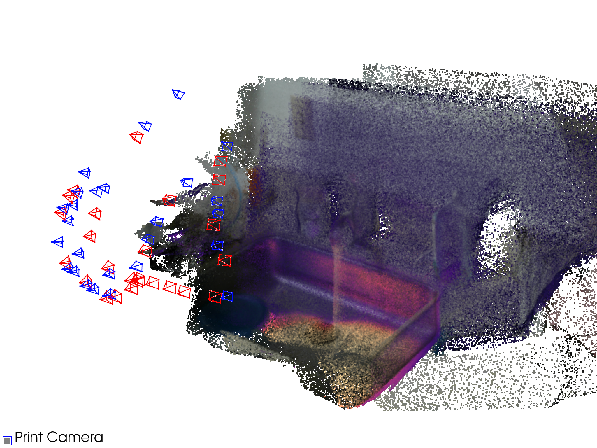
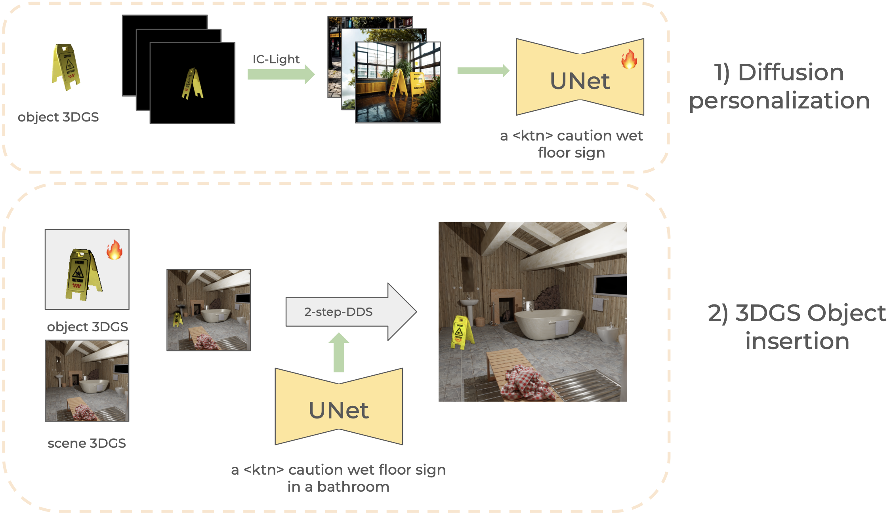
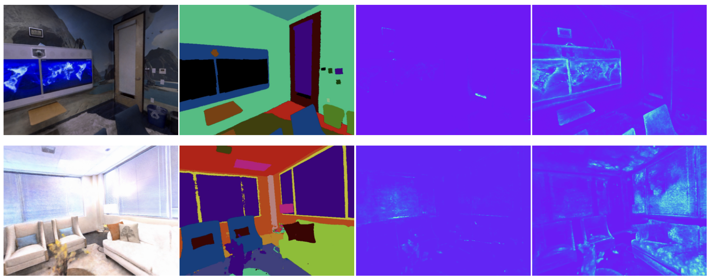

Gator: Cross-view Jigsaw Objective for Self-Supervised 3D Vision
Use Cross-View Jigsaw Puzzle Solving as a Self-Supervised Objective for 3D Vision.
I am an M.Sc. student in Data Science at EPFL and a research student at CVLab. I work on 3D computer vision and generative models, with a focus on Gaussian Splatting and diffusion models.
My experience spans research and industry, and I enjoy turning new ideas into practical systems.

I am interested in 3D scene representations, neural rendering, generative AI.
Use Cross-View Jigsaw Puzzle Solving as a Self-Supervised Objective for 3D Vision.

ECCV 2026
Estimates 3D geometry of unpaired RGB and thermal frames.

TMLR 2026
Lighting correction makes inserted 3D Gaussian Splatting objects blend naturally into their new scenes.

Optical Memory and Neural Networks, 2024
A neural semantic field that estimates uncertainty alongside color and semantic labels.